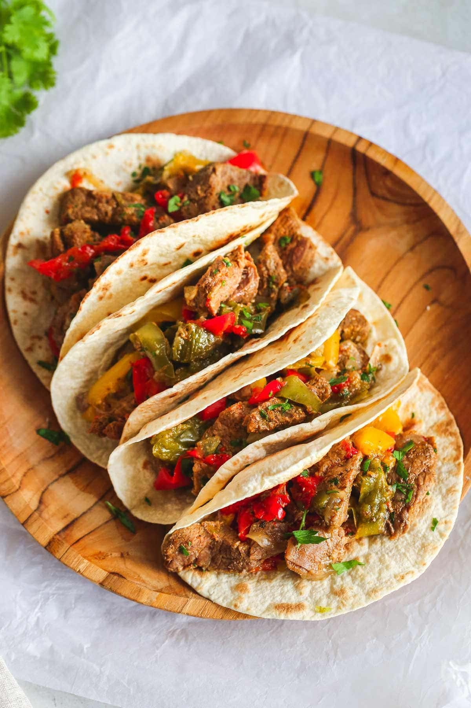

Fajitas

Description
It’s fajita time! Time to wow your family with an easy, all-from-scratch recipe for savory fajitas. A tender, marinated flank steak is cut into thin strips to top a crispy tortilla along with perfectly seasoned, sautéed pepper and onion.
Sizzling Steak Fajitas
Ingredients
- 2 teaspoons chili powder
- 1 tsp ground cumin
- 1 tsp smoked paprika
- 3 cloves garlic, minced
- Kosher salt and freshly ground pepper, to taste
- 1 1/2 pounds flat iron steak
- 2 1/2 tsp canola oil, divided
- 2 bell peppers
- 1 red onion cut into wedges
Directions
- Preheat grill to medium-high heat.
- In a small bowl, combine chili powder, cumin, paprika, garlic, 1 teaspoon salt and 1/2 teaspoon pepper. Season steak with chili powder mixture.
- Brush steak with 1 tablespoon canola oil. Add steak to grill, and cook, flipping once, until desired doneness, about 4-5 minutes per side for medium rare. Let rest 5 minutes.
- Season bell peppers and onion with remaining 1 1/2 tablespoons canola oil; season with salt and pepper, to taste.
- Add bell peppers and onion to grill, and cook, turning occasionally, until charred and tender, about 6-8 minutes.
- Thinly slice steak against the grain and serve with bell peppers and onion.